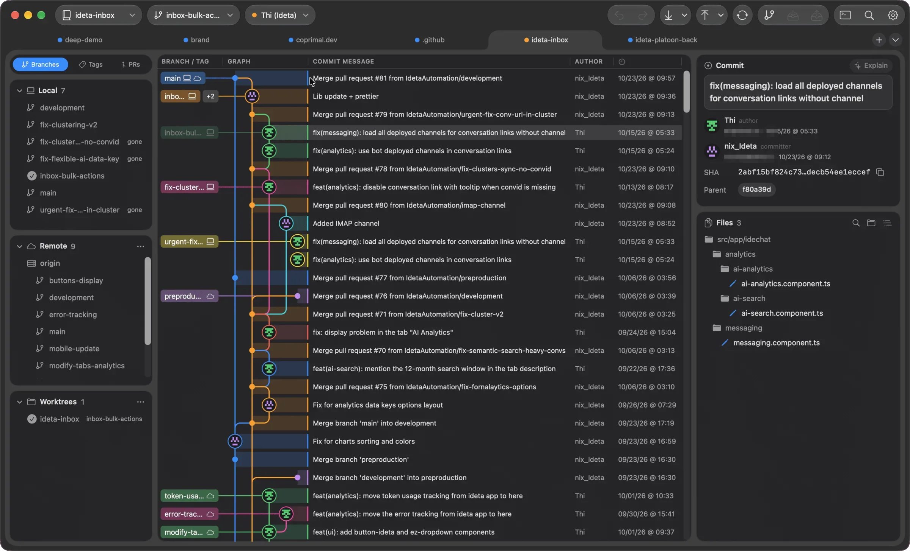
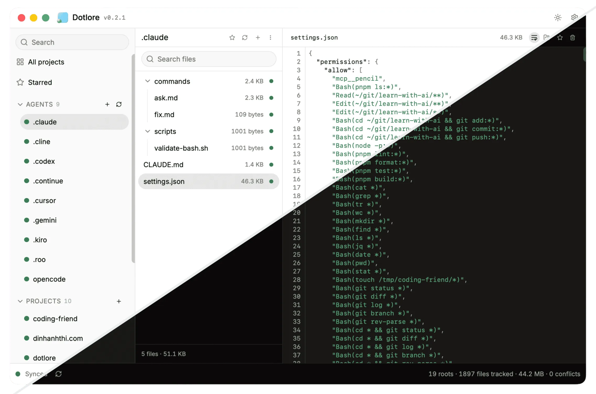
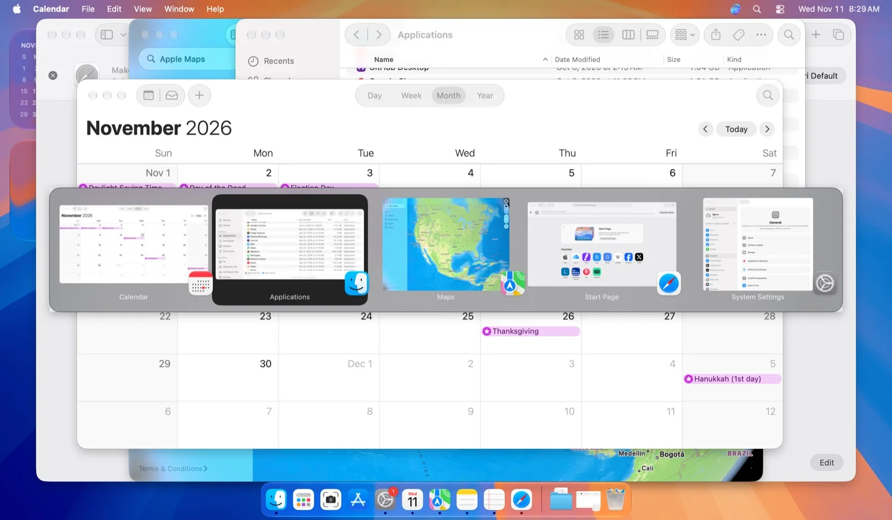
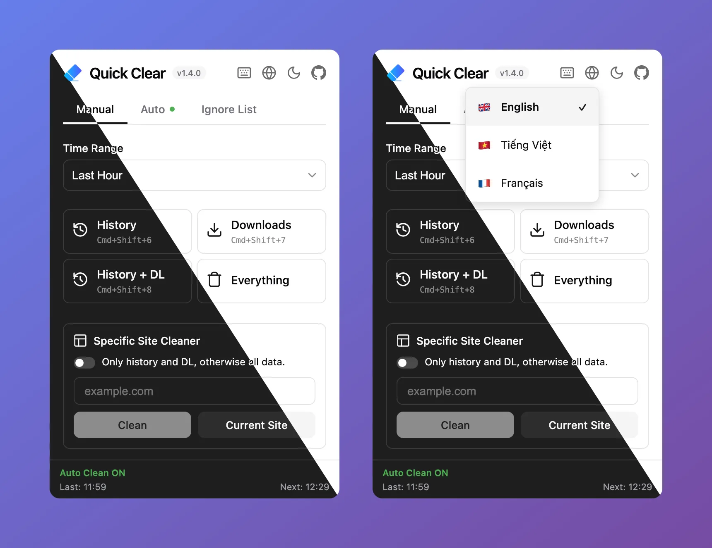

By devs.
For devs.
Still devs.
We build free, open source apps and materials so solo devs can keep loving being devs in the AI era.
gcd(dev, AI) = 1
1. The tools, in three places
Your Mac, your code, your browser. All free, all open source.

CmdTab
Switch windows, not apps

SimpleMapper
Remap keys, no driver

OpenDisplay
HiDPI for external screens

FastMoji
Emoji by typing
::smile
PopGuy
AI on selected text, also Windows

EchoDiar
Meeting notes with who said what

Histq
Native git client for macOS

Dblore
Database notebooks and SQL

dotlore
Sync the AI config git ignores

SegDown
Download only the parts you mark

Quick Clear
Wipe history in one click
2. Histq, dotlore, CmdTab, Quick Clear

Commit graph, line staging and rebase, on your own git.

Your .claude/ follows you between Macs, outside git.

One entry per window, with thumbnails and titles.

History, downloads and site data, gone in one click.
3. Two numbers that share only 1
Coprime numbers keep their own factors and still fit together. So can devs and AI.
4. Bring it to the round table
A direction, an idea, a tool you wish existed. Threads live in Coprimal/round-table.
No GitHub account? Write to contact@coprimal.dev.
5. The mark, the blues and Lato


- Lato
900, 400Heavy heads, regular body